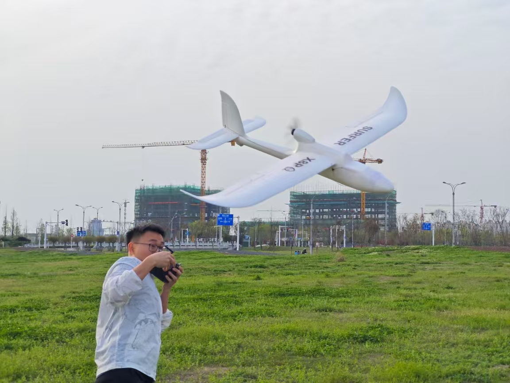
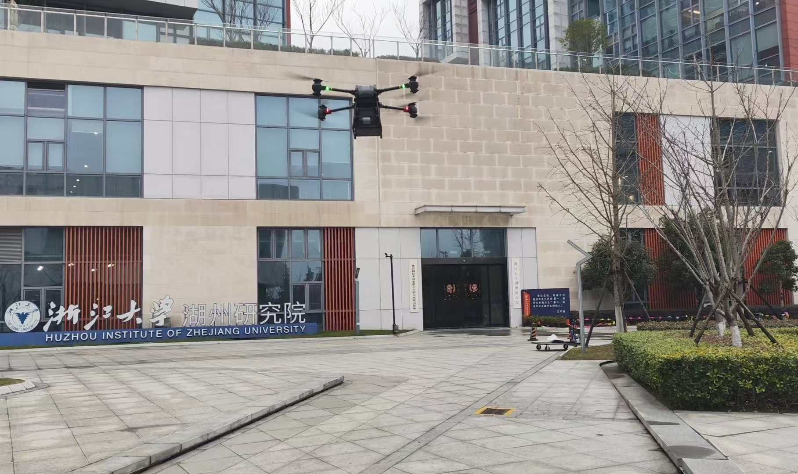
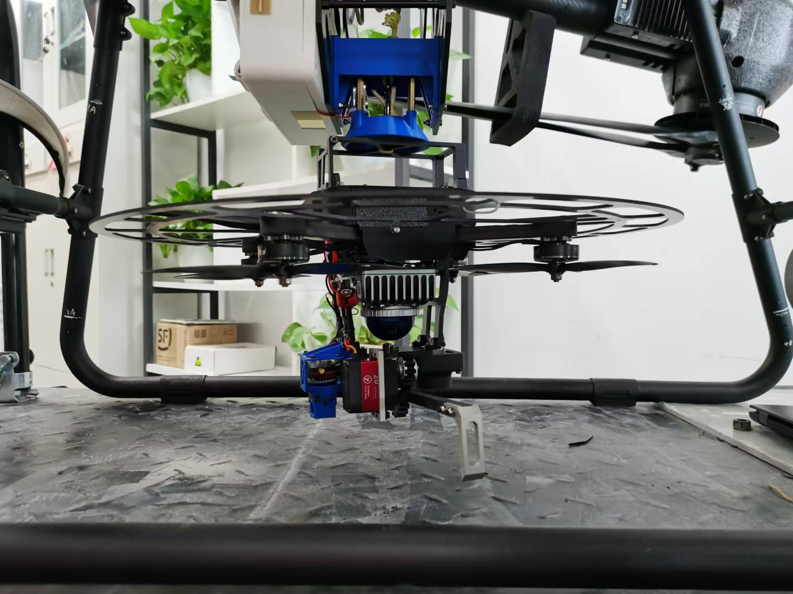
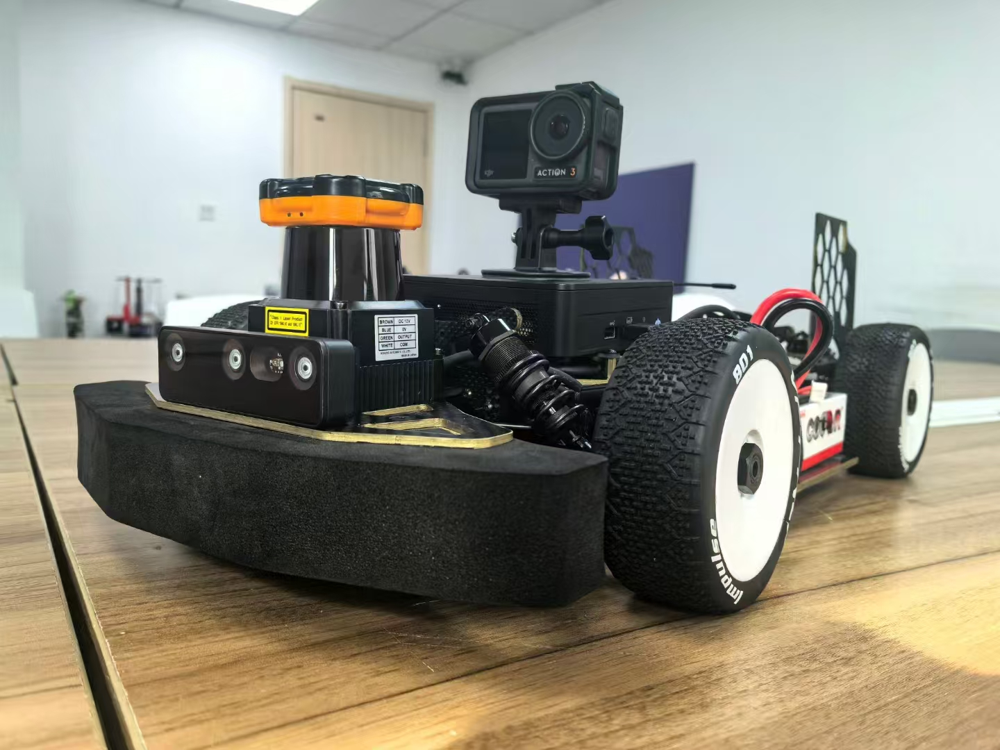
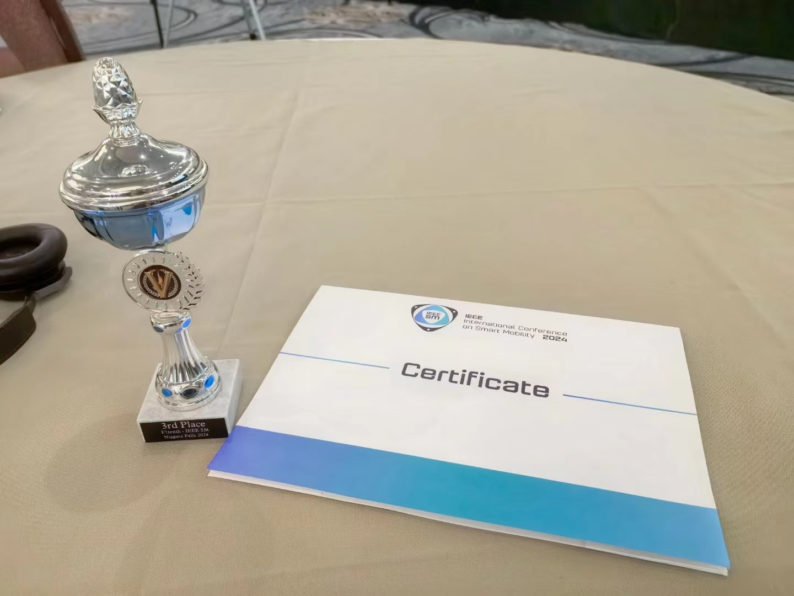
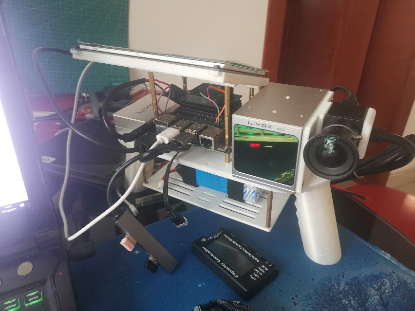
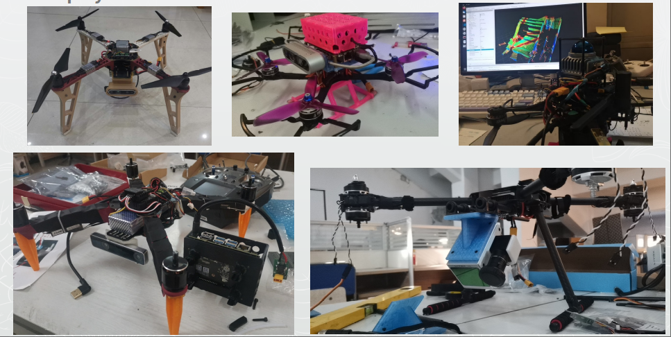
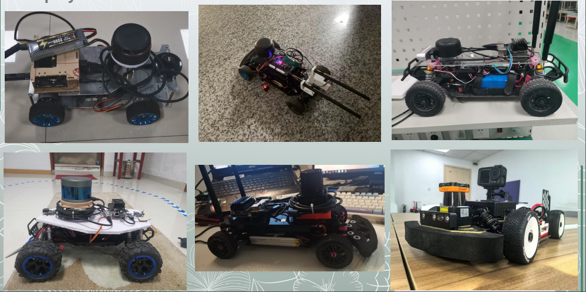
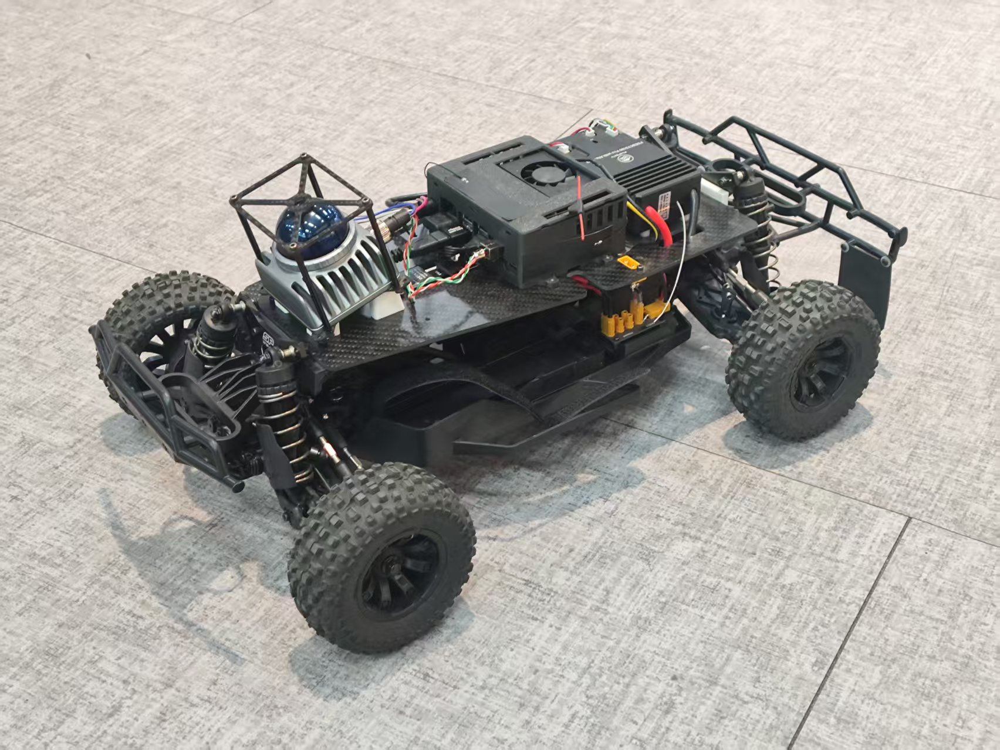

Real-time Spatial-temporal Traversability Assessment via Feature-based Sparse Gaussian Process
International Conference on Intelligent Robots and Systems (IROS 2025), Accepted
GitHub RepositoryMPhil Student
Focused on high-performance autonomous systems across racing, aerial robotics, and intelligent vehicles. Experienced in perception, planning, and control for RC cars, drones, and embedded robotics stacks.

Introduction
I am currently an MPhil student advised by Prof. Hailong Huang. I received my B.Eng. in Computer Science from Heilongjiang University of Science and Technology in 2023. Prior to my current role, I was a Research Assistant at ZJU FastLab and PolyU AIMS.
My interests span F1TENTH Racing, Reinforcement Learning, Control, Motion Planning, RC Cars, FPV drones, Fixed-wing aircraft.
Selected Publications
International Conference on Intelligent Robots and Systems (IROS 2025), Accepted
GitHub RepositoryInternational Conference on Intelligent Robots and Systems (IROS 2025), Accepted
GitHub RepositoryResearch Experience
Research Assistant, Jan. 2024 – Present
Advisor: Prof. Fei Gao


Lead Programmer, Sep. 2024


Team Leader, Apr. 2022 – Aug. 2022
Intern, Sep. 2021 – Feb. 2022
3D Reconstruction Lead, Apr. 2022 – Jun. 2022


Presenter, Apr. 2022 – Jun. 2022
Skills & Interests
Long-term Projects
Apr. 2022 – Present
Based on FastLab open-source stack.

These projects are under continuous refinement.
Apr. 2022 – Present
Built on the F1TENTH open-source ecosystem.

